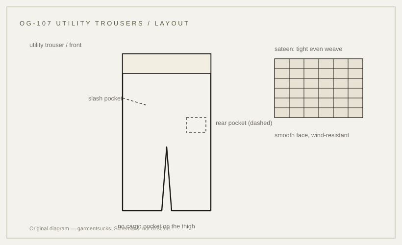

history · 1970
OG-107 utility trousers: not the M-65 field trousers
The utility trousers that carried the OG-107 colour — and are not the M-65 field trousers.
probable Published 2026-11-13 · last checked 2026-11-13

1. Summary
The OG-107 utility trousers are sateen work trousers in the US olive-green shade, with slash and rear pockets and no cargo pockets.
They belong to the utility uniform, not to the M-65 field clothing system: the M-65 field trousers (specification MIL-T-43497) are a separate cotton-nylon wind-resistant sateen garment with cargo pockets. Confidence: probable — the specification designation appears in a museum catalogue record, but the shape details rest on marketplace listings and reproducer notes.
2. What this is
Trousers, Utility, often called fatigue trousers: straight-leg work trousers in cotton sateen, dyed Army Shade OG-107, closed with a button fly and cut with slash pockets at the side seams and buttoned pockets at the rear.
The sateen is a tight weave with a smooth face; OG-107 is the shade code, not the cloth. A cargo pocket is a large patch pocket with a pleat, attached to the thigh — the utility trousers do not have one.
3. Origin and context
A Smithsonian National Museum of American History catalogue record describes a pair as Trousers, Utility, with the designer number OLIVE GREEN 107 and MIL-T-838-A; the credit line is the U.S. Army Quartermaster Museum. The record was reachable only as a catalogue excerpt, not as an opened page.
Marketplace listings and reproducer notes date the sateen version to the mid-1950s and describe the trousers as remaining in issue until the mid-1970s, when they were followed by OG-507. No specification document was found or opened for this garment, so the dating is per marketplace listings.
4. How it works
Sateen is dense: it blocks wind and resists abrasion, which suits work and garrison use, but it holds water and dries slowly. The slash pocket sits where a hand falls; the rear pockets are buttoned so contents stay put when seated.
The climate argument is an inference from the cloth, not a statement from a document: in humid heat the same density that makes sateen useful in winter makes it a poor field cloth.
5. Construction
The work order readable from the garment: cut the legs, attach the slash pocket bags at the side seams, build the rear pockets with flaps, sew the fly and waistband, close the leg seams, then the hems.
This sequence is inferred from garment construction; no document opened for this card describes the manufacturing order. The pocket set is the identifying feature: two slash pockets, two rear pockets, no thigh cargo pockets.
6. Variants across eras
| Variant | Year/country | Difference | Source status |
|---|---|---|---|
| Utility trousers, OG-107 | mid-1950s to mid-1970s, US | cotton sateen; slash and rear pockets; no cargo pockets | spec designation per museum excerpt; dates per marketplace listings |
| M-65 field trousers | 1965, US | MIL-T-43497 cotton-nylon wind-resistant sateen; cargo pockets; snap front and rear pockets | TM 10-8400-201-23 excerpt; a different garment |
| Utility trousers, OG-507 | mid-1970s onward, US | polyester-cotton replacement | per marketplace listings |
| Modern reproduction | present | often tighter sateen, corrected pockets | market observation |
7. Telling an original from a reproduction
Look for the sateen face, the button fly, and the absence of thigh cargo pockets. Original pairs carry a stamped/printed stock label inside the waistband; the shade should read as a flat olive rather than a warm khaki.
Per marketplace listings, reproductions often use a lighter sateen, add cargo pockets for a field look, or print the OG-107 designation without a stock number.
8. Common mistakes and myths
The most common error is treating the OG-107 utility trousers as M-65 field trousers: the two share the shade and the word sateen but differ in specification, closure, pockets and weight.
A second error is assuming that a cargo pocket belongs to the utility pattern; it does not.
9. How to read it in wear
The straight leg and flat pocket set read as workwear; the same trousers become a field garment only when paired with the jungle jacket. Check how the waistband sits when a jacket hangs over it.
10. Modern designer trail
The utility trouser is the quieter half of the military wardrobe: designers borrow its plain front and straight leg rather than its insignia. No direct-influence claim is made here.
11. Specification
The left column records only what a source states; the right column is empty because no reproduction figures are proposed for this card.
| Recorded in sources | Reproduction suggestion |
|---|---|
| Trousers, Utility; designer number OLIVE GREEN 107, MIL-T-838-A (Smithsonian NMAH catalogue excerpt) | — |
| Cotton sateen, OG-107 shade (museum excerpt; consistent with marketplace listings) | — |
| Not this garment: M-65 field trousers, MIL-T-43497, cargo pockets (TM 10-8400-201-23 excerpt) | — |
12. Questions and exercises
1) Does a pair you own have cargo pockets? If so, it is not this garment. 2) Can you find a stock label inside the waistband, and does it carry a number? 3) Which source on this card is T1, and what does it actually prove?

Glossary
- Utility uniform
- Work clothing for garrison and fatigue duties.
- Sateen
- Tight weave with a smooth face; wind-resistant, slow to dry.
- OG-107
- US olive-green shade code.
- Cargo pocket
- Large thigh pocket with a side pleat.
- MIL-T-43497
- Specification for the M-65 field trousers, not this garment.
Sources
- [S1] [T1] Smithsonian NMAH, record nmah_444668 — Trousers, Utility, OLIVE GREEN 107, MIL-T-838-A (catalogue excerpt; page not opened)
- [S2] [T1] TM 10-8400-201-23, Identification and Description, p. 187 — M-65 field trousers, MIL-T-43497 (excerpt; page did not open on retry)
- [S3] [T3] The Real McCoy's — TROUSERS, MEN'S, COTTON SATEEN, OG-107 notes (sateen from the mid-1950s; issue to the mid-1970s; OG-507)
- [Photo] Grailed listing 75525594 — listing photo, @vintage_estate, Grailed, accessed 2026-11-13
Claims & sources
| Claim | Source | Tier | URL | Status |
|---|---|---|---|---|
| Trousers, Utility; designer number OLIVE GREEN 107, MIL-T-838-A | Smithsonian NMAH nmah_444668 | T1 | link | partially verified (catalogue excerpt; page not opened) |
| Cotton sateen in OG-107 | Smithsonian excerpt; The Real McCoy's | T1 | partially verified | |
| Sateen version dated from the mid-1950s; issue to the mid-1970s; replaced by OG-507 | The Real McCoy's | T3 | link | unverified |
| Slash and rear pockets, no cargo pockets | Marketplace listings and images | T3 | unverified (per marketplace listings) | |
| M-65 field trousers are MIL-T-43497 with cargo pockets — not this garment | TM 10-8400-201-23, p. 187 | T1 | link | partially verified (excerpt) |